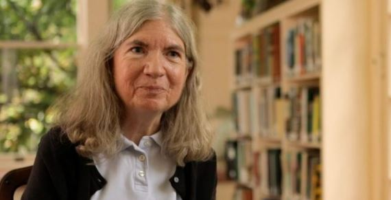
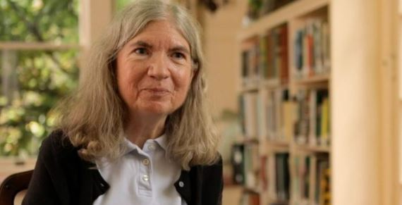

Carol nasceu em 1955 em Palo Alto, uma cidade da Califórnia – onde também passou sua infância e adolescência.
Seu pai era engenheiro mecânico e trabalhava na Standford Linear Accelerator Center (ou o Centro de Aceleração Linear de Standford) – um laboratório que realizava projetos relacionados à energia para o governo. Sua mãe era dona de casa, mas, após um tempo, começou a trabalhar em uma livraria.
Shaw era a irmã do meio de dois irmãos, e geralmente participava das brincadeiras que eles faziam. Seu pai e irmãos começaram a brincar com trens em miniatura e modelos de ferrovia, então ela começou a brincar também.
Carol montou circuitos com alguns transistores para ligar luzes de sinal na mini ferrovia – um projeto que manteve até sua faculdade, e que largou quando entrou no curso de computação.
Desde cedo, ela também possuía contato com jogos eletrônicos e com a matemática.
Ela jogou Computer Space, o primeiro jogo arcade comercial, em uma sala de jogos arcade que havia no clube onde os pais jogavam minigolfe.
Durante seu ensino fundamental e ensino médio, ela participou de várias competições de matemática, ganhando prêmios.
E, desde pequena, Carol também enfrentou preconceito por participar ativamente da área de STEM (Science, Technology, Engineering e Mathematics – ou Ciência, Tecnologia, Engenharia e Matemática, em português):
“As pessoas diziam: ‘Nossa, você é boa em matemática para uma garota’. Isso era meio irritante. Por quê garotas não deveriam ser boas em matemática?“ – Carol para a revista Vintage Computing.
Nos anos 60/70, Carol usou pela primeira vez um computador enquanto frequentava a escola secundária, em Palo Alto, na Califórnia. Na escola mostrou os seus dotes para a matemática e para o código.
Estudou na Universidade de Berkeley na Califórnia, onde viria a obter um mestrado em ciências computacionais. Foi imediatamente contratada pela gigante dos videojogos, Atari Inc.
Quem é Carol Shaw ?
O universo dos games, em seu início, foi conhecido por não ter muitas mulheres na aréa de desenvolvimento de games. Todavia, após um certo tempo, Carol Shaw mudou está questão.
Carol Shaw, a primeira mulher a desenvolver videojogos, foi responsável por uma revolução de género no mundo da computação. Desenvolveu o primeiro videojogo em 1978 e é a história de sucesso de hoje.
Seu inicio e Saida da Atari
O trabalho de Carol Shaw na Atari começou em 1978, na programação de jogos para a consola 2600. Infelizmente, acabou por ser uma das engenheiras e designers mais bem-sucedidas da empresa menos faladas, muito graças ao domínio masculino da área da programação e computação.
Um dos primeiros projetos em que trabalhou foi o Polo, uma ligação promocional para o perfume com o mesmo nome de Ralph Lauren. O jogo chegou ao protótipo, mas a Atari optou por não o lançar.
Contudo, o talento de Carol Shaw para a programação de jogos de consola, levaram-na ao estrelato entre os colegas. Na época, os developers criavam um jogo inteiro, incluindo programação, som e gráficos. Algo que Carol valorizava tremendamente.
Em várias entrevistas, disse que entrou para a Atari, porque lhe pagavam para passar o dia a jogar.
Trabalhando na Atari, ela fez a arte, programação e/ou design de cinco jogos: Polo; Jogo da Velha 3d (3D Tic Tac Toe), onde você podia jogar contra uma inteligência artificial ou contra outro jogador; Video Checkers; Othello; e Super Breakout.

Entrando na Activision
Em 1982, começou a trabalhar para a Activision, onde entrou, mais uma vez, como a primeira e única engenheira da equipa. Foi nesta empresa que criou o jogo que a viria a tornar famosa nos anos 80, o River Raid. É considerado um clássico e um dos jogos mais populares do seu tempo, juntamente com o Pac-man.
A versão do jogo para Atari 2600 vendeu um milhão de cópias, sem contar as cópias não autorizadas. O jogo consiste em controlar um avião ao longo de um rio, e pela primeira vez o utilizador segue verticalmente ao longo do jogo. O sucesso do River Raid permitiu uma reforma antecipada a Carol Shaw, que se dedicou e tem dedicado ao trabalho voluntário, desde os anos 90.
Em 2017, recebeu o Industry Icon Award, nos The Game Awards, e doou grande parte da sua coleção de jogos, designs e projetos a museus da especialidade.
Projetos
Ainda na Activision, Carol teve uma nova ideia. Ela começou a trabalhar em um jogo chamado Happy Trails, que era inspirado em um jogo chamado Locomotion – um puzzle de arrastar blocos.
Happy Trails foi programado para Intellivision, que era bem menos limitado que o Atari. Assim, o plano de fundo podia ser mais detalhado, e mais objetos poderiam ser inseridos no jogo.
Os jogos na época eram de ordenar números em matrizes 4×4, arrastando os blocos para isso.
Baseado nessa ideia, em Happy Trails você movia os blocos e montava uma estrada para personagem andar. E assim, ele conseguia coletar o dinheiro e ganhava uma pontuação.
Depois de Happy Trails, Carol ainda programou outro jogo para ColecoVision: Uma aventura gráfica onde você podia se movimentar em um labirinto em baixo da terra. Mas os planos não eram somente esses, o jogo seria bem mais expandido.
Porém, Carol estava se cobrando muito para programar um jogo tão bom quanto River Raid, e isso começou a deixar seu trabalho estressante. Então ela tirou um tempo para descansar, e acabou nunca finalizando este jogo, apesar de existirem protótipos.
Um tempo depois, ela decidiu sair da Activision e voltar a trabalhar para a Tandem, onde foi contratada novamente para trabalhar na mais nova máquina da empresa.
Uma Inspiração para outas Mulheres
Sua história acabou servindo como inspiração e porta de entrada para outras mulheres na indústria dos videogames. Shaw deixava claro em entrevistas que não queria medir forças com os programadores homens, ou virar ativista, mas sim trabalhava com jogos porque gostava de desenvolvê-los.
Carol teve contato com o feminismo nas aulas de sociologia no ensino médio, e relatou que acredita que este movimento fez com que as mulheres se sentissem livres para ingressarem na área da tecnologia.
Por fim, sua dica para mulheres e meninas que querem seguir a carreira de design de jogos ou de ciência da computação é:
QuizShaw
Parabéns por chegar até aqui! Agora é hora de testar seus conhecimentos.
 
